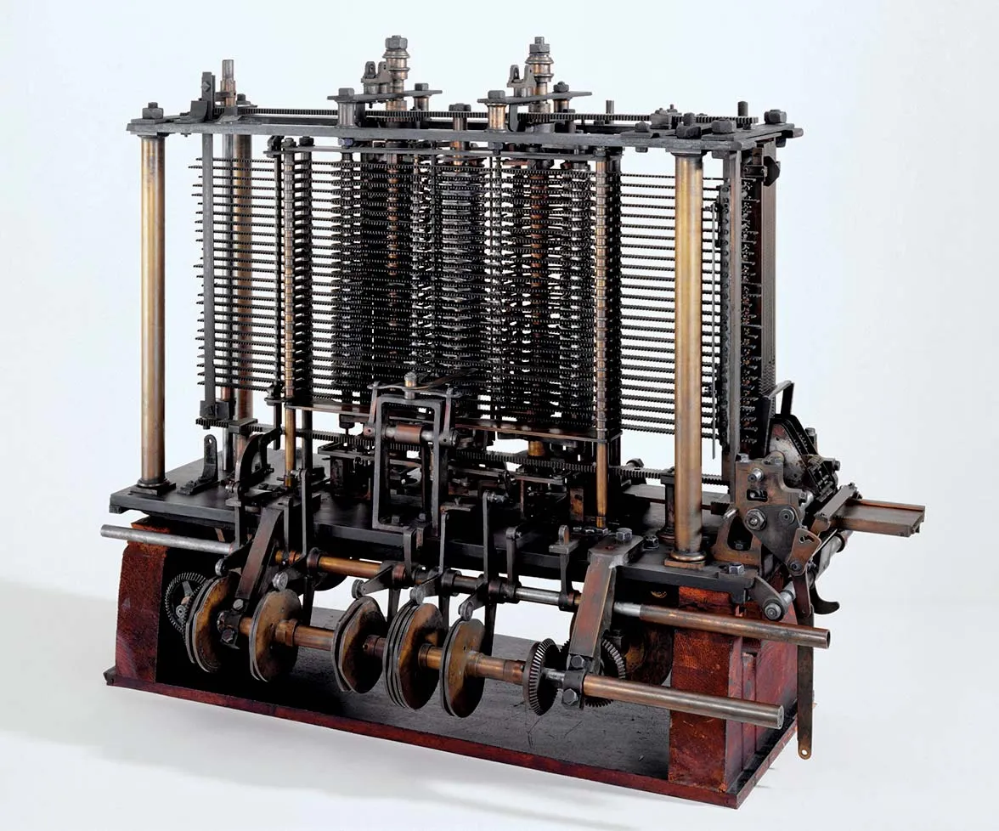

📝Programming Basics#
Printing hello world is not enough, is it? Computer programs provide us an interface with the digital world.
Computer Programs in a Nutshell:#
Take some user provided input
Conduct some computations
Return some output
Computer programs use instructions to transform inputs into useful outputs or actions
The First Computer Program#
Ada Lovelace 1815
she wrote of one such sequence—how to calculate Bernoulli numbers
Analytical Engine

Computational Thinking#
When programming it is important to consider the difference between human and machine logic.
Humans are great at finding commonality between observations even when they are imperfect. Humans bend the rules to accomplish a known goal.
Computer follows instructions literally. They are unaware of the goal and only do as they are instructed.
Designing a computer program requires recasting a human desired goal to be achieved by a set of literal instructions that a computer can perform
Example: Drawing a Square#
If you were told to draw a square, you would pick up a pen and draw 4 nearly perpendicular lines, with about equal length that result in an enclosed shape.
If we want a computer to draw a square (assuming we already have a way to draw) we:
Have to specify a start point
Have to tell the computer to draw a straight line of a specified length
Turn right by 90 degrees
Repeat steps 2-3, 3 more times
None of these steps can be inferred, they all need to be explicitly stated exactly.
# Python program to draw a ...
# using Turtle Programming
from mobilechelonian import Turtle
skk = Turtle()
for i in range(4):
skk.forward(50)
skk.right(90)
import turtle
turtle.setup(width=600, height=500)
turtle.reset()
turtle.hideturtle()
turtle.speed(0)
turtle.bgcolor('black')
c = 0
x = 0
colors = [
#reddish colors
(1.00, 0.00, 0.00),(1.00, 0.03, 0.00),(1.00, 0.05, 0.00),(1.00, 0.07, 0.00),(1.00, 0.10, 0.00),(1.00, 0.12, 0.00),(1.00, 0.15, 0.00),(1.00, 0.17, 0.00),(1.00, 0.20, 0.00),(1.00, 0.23, 0.00),(1.00, 0.25, 0.00),(1.00, 0.28, 0.00),(1.00, 0.30, 0.00),(1.00, 0.33, 0.00),(1.00, 0.35, 0.00),(1.00, 0.38, 0.00),(1.00, 0.40, 0.00),(1.00, 0.42, 0.00),(1.00, 0.45, 0.00),(1.00, 0.47, 0.00),
#orangey colors
(1.00, 0.50, 0.00),(1.00, 0.53, 0.00),(1.00, 0.55, 0.00),(1.00, 0.57, 0.00),(1.00, 0.60, 0.00),(1.00, 0.62, 0.00),(1.00, 0.65, 0.00),(1.00, 0.68, 0.00),(1.00, 0.70, 0.00),(1.00, 0.72, 0.00),(1.00, 0.75, 0.00),(1.00, 0.78, 0.00),(1.00, 0.80, 0.00),(1.00, 0.82, 0.00),(1.00, 0.85, 0.00),(1.00, 0.88, 0.00),(1.00, 0.90, 0.00),(1.00, 0.93, 0.00),(1.00, 0.95, 0.00),(1.00, 0.97, 0.00),
#yellowy colors
(1.00, 1.00, 0.00),(0.95, 1.00, 0.00),(0.90, 1.00, 0.00),(0.85, 1.00, 0.00),(0.80, 1.00, 0.00),(0.75, 1.00, 0.00),(0.70, 1.00, 0.00),(0.65, 1.00, 0.00),(0.60, 1.00, 0.00),(0.55, 1.00, 0.00),(0.50, 1.00, 0.00),(0.45, 1.00, 0.00),(0.40, 1.00, 0.00),(0.35, 1.00, 0.00),(0.30, 1.00, 0.00),(0.25, 1.00, 0.00),(0.20, 1.00, 0.00),(0.15, 1.00, 0.00),(0.10, 1.00, 0.00),(0.05, 1.00, 0.00),
#greenish colors
(0.00, 1.00, 0.00),(0.00, 0.95, 0.05),(0.00, 0.90, 0.10),(0.00, 0.85, 0.15),(0.00, 0.80, 0.20),(0.00, 0.75, 0.25),(0.00, 0.70, 0.30),(0.00, 0.65, 0.35),(0.00, 0.60, 0.40),(0.00, 0.55, 0.45),(0.00, 0.50, 0.50),(0.00, 0.45, 0.55),(0.00, 0.40, 0.60),(0.00, 0.35, 0.65),(0.00, 0.30, 0.70),(0.00, 0.25, 0.75),(0.00, 0.20, 0.80),(0.00, 0.15, 0.85),(0.00, 0.10, 0.90),(0.00, 0.05, 0.95),
#blueish colors
(0.00, 0.00, 1.00),(0.05, 0.00, 1.00),(0.10, 0.00, 1.00),(0.15, 0.00, 1.00),(0.20, 0.00, 1.00),(0.25, 0.00, 1.00),(0.30, 0.00, 1.00),(0.35, 0.00, 1.00),(0.40, 0.00, 1.00),(0.45, 0.00, 1.00),(0.50, 0.00, 1.00),(0.55, 0.00, 1.00),(0.60, 0.00, 1.00),(0.65, 0.00, 1.00),(0.70, 0.00, 1.00),(0.75, 0.00, 1.00),(0.80, 0.00, 1.00),(0.85, 0.00, 1.00),(0.90, 0.00, 1.00),(0.95, 0.00, 1.00)
]
while x < 1000:
idx = int(c)
color = colors[idx]
turtle.color(color)
turtle.forward(x)
turtle.right(98)
x = x + 1
c = c + 0.1
turtle.exitonclick()